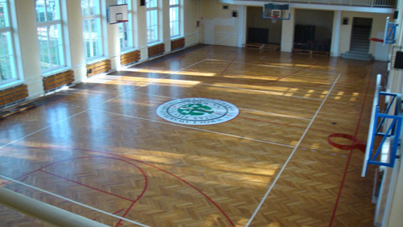

WHAT'S NEW OVERVIEW F.A.Q. FORUM MEMBERS REFERENCE CLUBS EVENTS RESULTS PHOTOS VIDEOS FREESTYLE NET GAME IFPA GROUPS RULES LINKS
*Copyright © 2026, International Footbag Players' Association
A 501(c)(3) Non-Profit Corporation
Zocha Jam 2010
Online registration CLOSED
December 4-5, 2010
Location:
Site(s) TBA
Wroclaw, Poland
Wroclaw, Poland
Host Club:
Events Offered:
Open Singles Net, Open Doubles Net, Intermediate Freestyle, Women Freestyle, Open Freestyle, Doubles Freestyle, Shred30, Sick3, Circle Contest, Request Contest, 2 Square, Golf
Results for Zocha Jam (2010)
Open Singles Routines:
1. Damian Gielnicki (Poland)2. Bartek Bubula (Poland)
3. Mariusz Wilk (Poland)
4. Rafal Kaleta (Poland)
4. Michal Ostrowski (Poland)
6. Marcin Bujko (Poland)
7. Jakub Grabarczyk (Poland)
8. Tomasz Ostrowski (Poland)
9. Arkadiusz Stanek (Poland)
Women's Singles Routines:
1. Dorota Wojtasiuk (Poland)2. Sylwia Kocyk (Poland)
3. Malgorzata Ostrowska (Poland)
4. Kinga Gwó¼d¼ (Poland)
Open Shred:30:
1. Damian Gielnicki (Poland) 189.12. Jakub Grabarczyk (Poland) 159.26
3. Mariusz Wilk (Poland) 157.5
4. Bartek Bubula (Poland) 154.76
5. Michal Biarda (Poland) 131.56
6. Rafal Kaleta (Poland) 125.36
7. Arkadiusz Stanek (Poland) 118.29
8. Pawel Nowak (Poland) 90
Open Sick 3-Trick:
1. Bartek Bubula (Poland)2. Damian Gielnicki (Poland)
3. Pawel Nowak (Poland)
4. Jakub Grabarczyk (Poland)
5. Pawel Scierski (Poland)
6. Michal Biarda (Poland)
Open Circle Contest:
1. Bartek Bubula (Poland)2. Damian Gielnicki (Poland)
3. Rafal Kaleta (Poland)
4. Mariusz Wilk (Poland)
Manually Entered Results
Open Doubles Net: 1. Maciej Samoborowski/Wiktor Dêbski 2. Wojciech Ignaczak/Marcin Staroñ 3. Piotr Ba³trukiewicz/Damian Budzik Singles Net: 1. Wiktor Dêbski 2. Damian Budzik 3. Maciej Samborowski 4. Piotr Ba³trukiewicz 5. Wojciech Ingnaczak 6. Marcin Staroñ Intermediate Singles Freestyle: 1. Dawid Micha³owicz 2. Patryk Tenderenda 3. Konrad Chlebny 4. Filip Wójcik 5. Maciej D³ugoszek Women Singles Freestyle: 1. Dorota Wojtasiuk 2. Sylwia Kocyk 3. Ma³gorzata Olêdzka 4. Kinga Gwó¼d¼ Open Singles Freestyle: 1. Damian Gielnicki 2. Bartosz Bubula 3. Mariusz Wilk 4. Micha³ Ostrowski 4. Rafa³ Kaleta 6. Marcin Bujko 7. Jakub Grabarczyk 8. Tomasz Ostrowski 9. Arkadiusz Stanek Circle Contest: 1. Bartosz Bubula 2. Damian Gielnicki 3. Rafa³ Kaleta 4. Mariusz Wilk Shred30: 1. Damian Gielnicki (189,10) 2. Jakub Grabarczyk (159,26) 3. Mariusz Wilk (157,5) 4. Bartosz Bubula (154,76 5. Micha³ Biarda (131,56) 6. Rafa³ Kaleta (125,36) 7. Arkadiusz Stanek (118,29) 8. Pawe³ Nowak (90) Sick3: 1. Bartosz Bubula (Alpine Blurry Whirl > Bedwetter > Open Near Symposium Double Over Down) 2. Damian Gielnicki (Stepping Reaper > Open Torque > Whirlwind) 3. Pawe³ Nowak (Atomotion > Locomotion > Far Symple Dyno) 4. Jakub Grabarczyk (Blurry Drifter > Nuclear Near Whip > Mobius) 5. Pawe³ ¦cierski ( Atomic Pickup > Shut Down > Matador) 6. Micha³ Biarda (Open Pickup Stallberger > Hyper Legover > Legover Cloud) Footbag Golf: 1. Micha³ Ostrowski 2. Micha³ Biarda 3. Damian Gielnicki 4. Bartosz Bubula 5. Filip Wójcik 6. Rafa³ Kaleta 7. Arkadiusz Stanek 8. Pawe³ ¦cierski 9. Patryk Tenderenda 10. Maciej D³ugoszek 10. Kinga Gwó¼d¼ 2 Square: 1. Micha³ Biarda 2. Bartek Bubula 3. Rafa³ Kaleta Request Contest: 1. Damian Gielnicki 2. Bartek Bubula 3. Mariusz Wilk Footbag Quiz: 1. Jakub Grabarczyk 2. Dorota Wojtasiuk 3. Wiktor Dêbski 4. Micha³ Biarda 5. Agatka 6. Micha³ Ostrowski 7. Pawe³ Ro¿ek 8. Bartosz Rz±sa 9. Marcin Ka³czor 10. Patryk Tenderenda 11. Damian Gielnicki 12. Micha³ Ja³owiecki 13. Filip Wójcik 14. Maciej D³ugoszek 15. Pawe³ Nowak
 |
December is nearing, and that means it's time for another edition of one of the biggest footbag tournaments in Poland - Zocha Jam! Make sure not to miss a long weekend of shredding and spiking in Wroclaw. We'll make sure to give you a great footbag experience!
VENUE:
|  |
Sports Gym
ul. Przesmyckiego 10, Wroc³aw
It is a modern gym, where both Freestyle and Net will be held. It has an built-in sound system and locker rooms with showers.
How to get there?
Take the bus "A" from Dworcowa (street next to the main train station) and ride it to the Dani³owskiego Street. Then you will have to walk a short distance (check the map below). You can also take the 116 bus from Plac Grunwaldzki, and get out on the same stop (Dani³owskiego).
Map:
Poka¿ Zocha Jam 2009 na wiêkszej mapie
INFO FOR PLAYERS:
Players competing in Routine events are required to send their music to the organizers before the the tournament. Please send your e-mails to zochajam@o2.pl - files need to have their names in the following format: first name_last name_event_round (for example jan_kowalski_openfreestyle_final)
REGISTRATION FEES:
Open Category: 50 PLN
Women: 30 PLN
Intermediate: 30 PLN
Guest: 20 PLN
Late registration on-site will be offered, but with the fee increased by 10 PLN.
TIMETABLE:
Saturday:
12:00 - 12:30 - Late Registration
12:00 - Open Golf
13:00 - Open Doubles Net Qualifications
12:30 - Judges Workshop
13:30 - Request Contest
14:00 - Open Freestyle Routines Qualifications
16:00 - Routines Finals: Intermediate, Women, Doubles, Open
16:30 - Shred30
17:00 - Footbag Quiz
17:30 - Food Break
18:00 - 2 Square Qualifications
18:00 - Doubles Net Final
19:00 - Award Ceremony and Special Awards
Sunday:
10:30 - Open Singles Net Qualifications
10:30 - 2 Square Semi-Finals and Finals
12:00 - Shred Sessions Contest
13:00 - Freestyle Workshop: Open and Stepping sets
14:00 - Sick3
14:30 - Circle Contest Qualifications and Finals
16:30 - Open Singles Net Final
17:15 - Award Ceremony
Created Tuesday, October 26th, 2010, 05:27am (PDT); last update Tuesday, December 7th, 2010, 07:50am (PST).